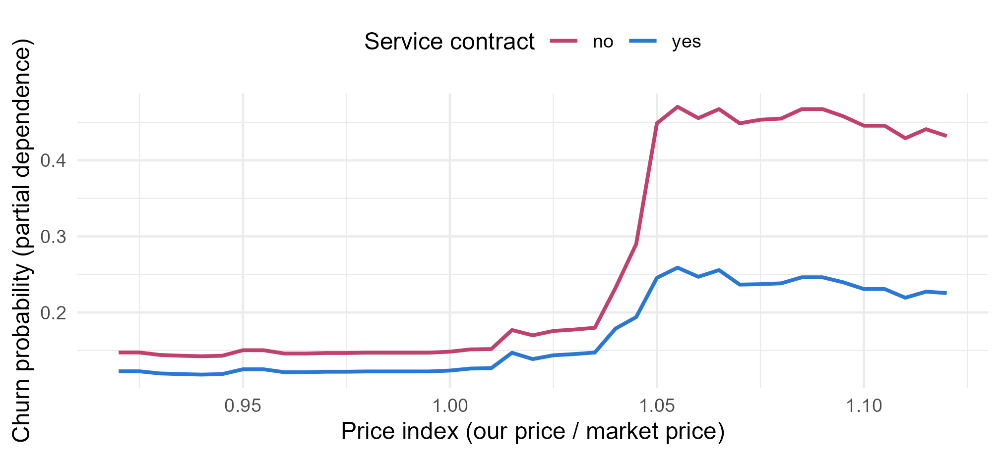

Module 8 · Lesson 13 of 13 Week 131 of 160 About 5–7 hours
Boosting
Small trees, each fixing the last one’s mistakes
Build gradient boosting by hand: fit a small tree to the catalyst-life residuals, add a fraction of it, and repeat, watching the test error fall. Then boost the churn model with gbm, choosing the number of trees, the learning rate and the tree depth on the validation set. Explain the result with relative influence, partial dependence (including a two-way plot that shows the price-by-service interaction) and Shapley values for one account, and finish with the module’s final comparison on the test set.
Random forests average many deep, independent trees to cut variance. Boosting does the opposite: it grows many small trees in sequence, each one fitted to what the trees before it got wrong, and adds them up. Each small tree is a weak, biased model; the sum is strong. Boosted trees are, by most accounts, the most accurate off-the-shelf method for tables of data, and they win most prediction competitions on business data. Lesson 7’s boosted C5.0 was a first taste. This lesson builds gradient boosting from scratch, then uses the gbm package.
Boosting is like learning from a series of tutors, each one focusing on exactly the questions you still get wrong. Slow and steady, and very effective.
In this lesson you’ll:
- build gradient boosting by hand for a regression, with small trees and a learning rate
- boost the churn model with
gbm(), and choose the number of trees on the validation set - see how the learning rate and the tree depth trade off
- read relative influence and partial dependence, including a two-way partial dependence
- explain one account’s prediction with Shapley values
- compare the module’s best models on the test set
Boosting by hand
For squared-error regression, gradient boosting is beautifully simple:
- Start with a constant prediction, \hat f_0 = \bar y.
- For m = 1, \ldots, M: compute the residuals r_i = y_i - \hat f_{m-1}(x_i), fit a small tree h_m to them, and update \hat f_m = \hat f_{m-1} + \nu\, h_m.
The learning rate (or shrinkage) \nu, typically 0.01 to 0.1, makes each tree’s contribution small, so that no single tree’s mistakes matter much. For other losses (like the churn model’s log loss), the residuals are replaced by the loss’s negative gradient, which is where “gradient” boosting gets its name.
The setup code reads Lesson 4’s catalyst-life charges (400 for training, 200 for testing), and the churn accounts prepared for gbm: the sales reps dropped, and the target as a 0/1 column churn (gbm handles the missing satisfaction scores itself).
Your turn. Boost depth-2 regression trees for catalyst life, 100 rounds with a learning rate of 0.1, and find the test RMSE.
The test predictions get the same learning rate, 0.1.
f_train <- rep(mean(ctrain$life_days), nrow(ctrain))
f_test <- rep(mean(ctrain$life_days), nrow(ctest))
for (m in 1:100) {
d <- ctrain
d$life_days <- ctrain$life_days - f_train
h <- rpart(life_days ~ ., data = d, control = small)
f_train <- f_train + 0.1 * predict(h, ctrain)
f_test <- f_test + 0.1 * predict(h, ctest)
}
c(train_rmse = sqrt(mean((ctrain$life_days - f_train)^2)), test_rmse = sqrt(mean((ctest$life_days - f_test)^2)))A training RMSE of 43 days and a test RMSE of 66: better than Lesson 4’s single tree (85) and Lesson 12’s random forest (69 to 74), from a hundred trees with only four leaves each. No single tree here is any good; each one nudges the prediction a tenth of the way toward fixing the current errors. Together they build the hinge in temperature and the H₂S step out of many small steps.
Your turn. Record the test RMSE after each round, for 300 rounds, and look at it after 1, 10, 25, 50, 100, 200 and 300.
The last round is 300.
f_train <- rep(mean(ctrain$life_days), nrow(ctrain))
f_test <- rep(mean(ctrain$life_days), nrow(ctest))
test_rmse <- numeric(300)
for (m in 1:300) {
d <- ctrain; d$life_days <- ctrain$life_days - f_train
h <- rpart(life_days ~ ., data = d, control = small)
f_train <- f_train + 0.1 * predict(h, ctrain)
f_test <- f_test + 0.1 * predict(h, ctest)
test_rmse[m] <- sqrt(mean((ctest$life_days - f_test)^2))
}
round(test_rmse[c(1, 10, 25, 50, 100, 200, 300)], 1)155.4 days after one round, 109.9 after 10, 83.3 after 25, 70.1 after 50, 66.2 after 100 and 200, and 66.8 after 300. The error falls fast, levels off, then starts, slowly, to rise. Unlike a random forest, boosting can overfit with too many trees: each new tree fits the residuals harder, and eventually it fits noise. The number of trees is boosting’s main tuning parameter.
gbm
The gbm package does gradient boosting properly, for many losses (distribution = "bernoulli" for a 0/1 target), with a few refinements: each tree is fitted to a random half of the data (stochastic gradient boosting, bag.fraction = 0.5), and trees are grown to a fixed number of splits (interaction.depth). The model stores every tree, so its prediction after any number of trees is available with predict(..., n.trees = k).
Your turn. Boost 1,500 trees of depth 3 for churn, with a learning rate of 0.02, and find the validation AUC after 10, 50, 100, 200, 400, 600, 1,000 and 1,500 trees.
A 0/1 target is distribution = "bernoulli".
set.seed(8132)
gb <- gbm(churn ~ ., data = train, distribution = "bernoulli", n.trees = 1500, interaction.depth = 3, shrinkage = 0.02)
k <- c(10, 50, 100, 200, 400, 600, 1000, 1500)
round(setNames(sapply(k, function(n) auc(predict(gb, valid, n.trees = n, type = "response"), valid$churn)), k), 4)0.780 after 10 trees, 0.831 after 100, 0.843 after 400, then a slow decline, to 0.837 after 1,500. Scanning every 25 trees, the best validation AUC is 0.844 at 550 trees: better than the random forest (0.832), and close to the engineered logistic regression (0.853), with no feature engineering at all. In practice, gbm’s cv.folds option can choose the number of trees by cross-validation instead (gbm.perf(gb, method = "cv")); here, the validation set does it.
Your turn. The learning rate and the number of trees trade off. Boost with learning rates of 0.1, 0.02 and 0.005 (3,000 trees each), and find each one’s best number of trees and validation AUC, scanning every 25 trees.
Use the function’s argument: shrinkage = nu.
t(sapply(c(0.1, 0.02, 0.005), function(nu) {
set.seed(8133)
g <- gbm(churn ~ ., data = train, distribution = "bernoulli", n.trees = 3000, interaction.depth = 3, shrinkage = nu)
k <- seq(25, 3000, by = 25)
a <- sapply(k, function(n) auc(predict(g, valid, n.trees = n, type = "response"), valid$churn))
c(shrinkage = nu, best_trees = k[which.max(a)], best_auc = max(a))
}))With a learning rate of 0.1, the best is 75 trees (AUC 0.841); with 0.02, 500 trees (0.844); with 0.005, 1,975 trees (0.844). A smaller learning rate needs proportionally more trees and does a little better, up to a point: slow learning averages more trees and is less sensitive to exactly when you stop. The usual advice: pick the smallest learning rate you can afford the computing time for, then tune the number of trees.
Your turn. The tree depth sets how many inputs can interact within one tree. Compare interaction.depth of 1, 2, 3 and 5.
Use interaction.depth = dp.
k <- c(10, 50, 100, 200, 400, 600, 800, 1000, 1500)
t(sapply(c(1, 2, 3, 5), function(dp) {
set.seed(8134)
g <- gbm(churn ~ ., data = train, distribution = "bernoulli", n.trees = 1500, interaction.depth = dp, shrinkage = 0.02)
a <- sapply(k, function(n) auc(predict(g, valid, n.trees = n, type = "response"), valid$churn))
c(depth = dp, best_trees = k[which.max(a)], best_auc = max(a))
}))Depth 1 (stumps, each splitting on a single input) reaches 0.832; depths 2, 3 and 5 reach 0.844, 0.846 and 0.843. A sum of stumps is an additive model, with no interactions, and the churn data have a real one (price by service contract). Depth 2 or 3 is enough to capture it; deeper trees need fewer rounds (200 at depth 5) but don’t do better. Depths of 2 to 8 are typical in practice.
Explaining a boosted model
A boosted model is hundreds of trees: no one can read it. Three tools explain it:
- Relative influence: each input’s share of the total improvement from all the splits on it, the boosting version of Gini importance;
- Partial dependence: the average prediction as one input (or two) is set to each value for every account (Lesson 10);
- Shapley values: for one prediction, each input’s fair share of the difference between that prediction and the average.
Your turn. Find the relative influence of each input in the 550-tree model.
Use the best number of trees, 550.
set.seed(8132)
gb <- gbm(churn ~ ., data = train, distribution = "bernoulli", n.trees = 1500, interaction.depth = 3, shrinkage = 0.02)
ri <- summary(gb, n.trees = 550, plotit = FALSE)
head(ri, 8)The late deliveries (24.3%), the price (15.8%), the volume change (14.7%), the account’s age (10.3%) and the segment (9.2%) lead, followed by the satisfaction score, the service contract and the complaints. The same story as every model in this module. Relative influence is computed from the training splits, like the Gini importance, so it shares the bias toward inputs with many split points; a permutation importance on the validation set is the safer check.
Your turn. Compute the boosted model’s partial dependence on the late deliveries, from 0 to 6.
Set the column to v.
set.seed(8132)
gb <- gbm(churn ~ ., data = train, distribution = "bernoulli", n.trees = 1500, interaction.depth = 3, shrinkage = 0.02)
pd <- sapply(0:6, function(v) {
d <- valid
d$late_deliveries <- v
mean(predict(gb, d, n.trees = 550, type = "response"))
})
round(setNames(pd, 0:6), 3)13.0% with no late deliveries, 13.8% with one, 14.7% with two, then a jump to 46.8% with three, and 51.8% from four on. A clean step at three, exactly as in the data: where Lesson 10’s network drew a smooth S-curve, the boosted trees, built from splits, find the threshold naturally. It’s the strength of tree ensembles on business data, where thresholds (“three strikes”) are common.
Your turn. A two-way partial dependence varies two inputs together. Compute it for the price index (0.95 to 1.08) and the service contract.
Use the training data’s levels: levels(train$tech_service).
set.seed(8132)
gb <- gbm(churn ~ ., data = train, distribution = "bernoulli", n.trees = 1500, interaction.depth = 3, shrinkage = 0.02)
grid <- expand.grid(price_index = c(0.95, 1.00, 1.03, 1.05, 1.08), tech_service = c("no", "yes"), stringsAsFactors = FALSE)
grid$pd <- sapply(seq_len(nrow(grid)), function(i) {
d <- valid
d$price_index <- grid$price_index[i]
d$tech_service <- factor(grid$tech_service[i], levels = levels(train$tech_service))
mean(predict(gb, d, n.trees = 550, type = "response"))
})
xtabs(round(pd, 3) ~ price_index + tech_service, data = grid)Below a price index of 1.03, the churn probability is about 15% without a service contract and 12% to 15% with one. At 1.05, it jumps to 45% without a contract, but only to 25% with one. The boosted model has found the price-by-service interaction on its own, threshold and all, which Lesson 9 had to build by hand from ctree’s hint. A one-way partial dependence on the price would average the two curves and hide this.
gp <- expand.grid(price_index = seq(0.92, 1.12, by = 0.005), tech_service = c("no", "yes"), stringsAsFactors = FALSE)
gp$pd <- sapply(seq_len(nrow(gp)), function(i) { d <- valid; d$price_index <- gp$price_index[i]
d$tech_service <- factor(gp$tech_service[i], levels = levels(train$tech_service)); mean(predict(gb, d, n.trees = 550, type = "response")) })
ggplot(gp, aes(price_index, pd, color = tech_service)) + geom_line(linewidth = 0.9) +
scale_color_manual(values = c(no = "#C2416C", yes = "#2a78d6"), name = "Service contract") +
labs(x = "Price index (our price / market price)", y = "Churn probability (partial dependence)") +
theme_minimal(base_size = 12) + theme(legend.position = "top")
NoteGo deeper: Shapley values
For a prediction f(x) with inputs 1, \ldots, p, let v(S) be the expected prediction when the inputs in the set S are fixed at x’s values and the others vary as in the data. Lloyd Shapley’s 1953 solution to sharing a payoff fairly among players gives input j the value
\phi_j = \sum_{S \subseteq \{1..p\} \setminus \{j\}} \frac{|S|!\,(p - |S| - 1)!}{p!} \big(v(S \cup \{j\}) - v(S)\big),
its marginal contribution averaged over every order in which inputs could be added. The \phi_j add up exactly to f(x) - E f(X). The sum has 2^{p-1} terms per input, so exact Shapley values are only feasible for a few inputs; the SHAP methods (Lundberg and Lee, 2017) approximate them quickly, and exactly for trees (TreeSHAP). The challenge below computes them exactly for four inputs, on the log-odds scale, with the other inputs held at the account’s values. Molnar’s Interpretable Machine Learning has a clear chapter on them.
Challenge round
Challenge 1 · Why this account? The validation account with the highest predicted churn risk (0.986) is a one-year-old Adhesives account with one late delivery, a 36% volume drop, a price 7.7% above the market, no service contract and a satisfaction score of 4. Compute exact Shapley values, on the log-odds scale, for four of its inputs (late deliveries, volume change, price and service contract), using 200 random validation accounts as the background.
Each term is the contribution of adding j to the set S: v(c(S, j)) - v(S).
set.seed(8132)
gb <- gbm(churn ~ ., data = train, distribution = "bernoulli", n.trees = 1500, interaction.depth = 3, shrinkage = 0.02)
x <- valid[which.max(predict(gb, valid, n.trees = 550, type = "response")), ]
feats <- c("late_deliveries", "volume_change_pct", "price_index", "tech_service")
set.seed(8135)
bg <- valid[sample(nrow(valid), 200), ]
v <- function(S) {
d <- bg; for (f in S) d[[f]] <- x[[f]]
mean(predict(gb, d, n.trees = 550))
}
p <- length(feats)
shap <- sapply(feats, function(j) {
others <- setdiff(feats, j); total <- 0
for (k in 0:length(others)) {
subsets <- if (k == 0) list(character(0)) else combn(others, k, simplify = FALSE)
for (S in subsets) total <- total + factorial(length(S)) * factorial(p - length(S) - 1) / factorial(p) * (v(c(S, j)) - v(S))
}
total
})
round(c(shap, sum = sum(shap), check = v(feats) - v(character(0))), 3)On the log-odds scale, the volume drop contributes +1.87, the high price +1.72 and the missing service contract +0.37, and the single late delivery -0.12 (it’s slightly below the average account’s 1.1). Together, +3.85: exactly the difference between these four inputs fixed at the account’s values and the background average, as Shapley values guarantee. For the engineer visiting this account, that’s a to-do list: the price and the falling volume are the problems, not the deliveries. Shapley values turn a black-box prediction into a reason that can be acted on.
Challenge 2 · The final table. Compare the module’s three strongest models on the test set: the boosted model (550 trees), a random forest (300 trees, Lesson 12’s settings) and Lesson 9’s engineered logistic regression.
Compare with the test target, test$churn.
set.seed(8132)
gb <- gbm(churn ~ ., data = train, distribution = "bernoulli", n.trees = 1500, interaction.depth = 3, shrinkage = 0.02)
fill <- function(d) {
d$sat_missing <- as.integer(is.na(d$satisfaction)); d$satisfaction[is.na(d$satisfaction)] <- 7
d$churned <- factor(ifelse(d$churn == 1, "yes", "no"), levels = c("no", "yes")); d$churn <- NULL; d
}
set.seed(8123)
rf <- randomForest(churned ~ ., data = fill(train), ntree = 300)
eng <- function(d) {
d <- fill(d)
d$late_grp <- cut(d$late_deliveries, c(-1, 0, 2, Inf), labels = c("0", "1-2", "3+"))
d$vol_drop <- as.integer(d$volume_change_pct < -15); d$high_price <- as.integer(d$price_index > 1.04)
d$new_account <- as.integer(d$account_years <= 2); d
}
logit <- glm(churned ~ late_grp + vol_drop + high_price * tech_service + new_account + segment +
complaints + satisfaction + sat_missing + visits, family = binomial, data = eng(train))
round(c(boosting = auc(predict(gb, test, n.trees = 550, type = "response"), test$churn),
random_forest = auc(predict(rf, fill(test), type = "prob")[, "yes"], test$churn),
engineered_logistic = auc(predict(logit, eng(test), type = "response"), test$churn)), 3)0.850 for boosting, 0.840 for the random forest and 0.865 for the engineered logistic regression. The ensembles are excellent with no feature engineering at all, and they would be the default choice on a new problem. But the logistic regression, with four inputs suggested by the trees, wins here, and it’s the model a sales team can read. The module’s lesson in one line: use trees to find the structure, and choose the final model by what it earns and who has to trust it.
Quick quiz
1. How does boosting differ from a random forest?
Forests reduce variance; boosting reduces bias, step by step.
2. What does each tree fit in gradient boosting with squared error?
For other losses, the negative gradient of the loss.
3. Can boosting overfit by adding more trees?
The catalyst model’s test error started rising after about 200 rounds.
4. What happens when you lower the learning rate?
0.005 needed about 2,000 trees to 0.1’s 75.
5. What does interaction.depth = 1 give?
It was the weakest depth for churn, which has a real interaction.
6. What do one account’s Shapley values add up to?
That’s what makes them a fair split of one prediction among the inputs.
Wrap-up
You’ve finished the module with its most powerful method. Here’s what you’ve learned:
- Gradient boosting adds small trees fitted to the residuals, each scaled by a learning rate. By hand, 100 depth-2 trees cut the catalyst test RMSE from 155 to 66 days.
- The number of trees must be tuned: the churn model’s validation AUC peaked at 0.844 around 550 trees, then declined.
- A smaller learning rate needs more trees and does a little better; depth sets the order of interactions, and depth 1 was the weakest.
- Relative influence, partial dependence and Shapley values explain the model: the boosted trees found the step at three late deliveries and the price-by-service interaction, without being told.
- The final comparison on the test set: boosting and the random forest close behind the engineered logistic regression, which won because the trees had shown it where to look.
TipPractice in RStudio (optional, about an hour)
Download customer_churn.csv and catalyst_life.csv into your project’s data-raw/ folder, and install gbm (and, if you like, xgboost).
- Cross-validate the number of trees. Refit the churn model with
cv.folds = 5, and usegbm.perf(gb, method = "cv"). Does it agree with the validation set’s choice? - gbm’s partial dependence.
plot(gb, i.var = "late_deliveries", n.trees = 550)andplot(gb, i.var = c("price_index", "tech_service"), n.trees = 550)draw what you computed by hand. - XGBoost. Fit the churn model with
xgboost::xgboost()on a numeric matrix (usemodel.matrix()), witheta = 0.02,max_depth = 3and early stopping on the validation set. Compare its AUC and speed. - SHAP for every account. Install fastshap or treeshap, compute SHAP values for the validation accounts, and plot them for the late deliveries against its value. Where’s the step?
NoteKey words from this lesson
- Boosting
- Building a strong model as a sum of weak models fitted in sequence, each to the current model’s errors.
- Gradient boosting
- Boosting in which each new model is fitted to the negative gradient of the loss: the residuals, for squared error.
- Learning rate (shrinkage)
- The factor \nu by which each new tree is scaled before it’s added.
- Stochastic gradient boosting
-
Fitting each tree to a random subsample of the data (
bag.fractionin gbm). - Interaction depth
- The number of splits in each tree, which limits the order of interactions the model can represent.
- Relative influence
- Each input’s share of the total improvement from the splits on it, across all the trees.
- Shapley values
- Each input’s average marginal contribution to one prediction, over all orders of adding the inputs.
NoteWant to read more?
- James, Witten, Hastie and Tibshirani, An Introduction to Statistical Learning (2nd edition), section 8.2.3, “Boosting”.
- Boehmke and Greenwell, Hands-On Machine Learning with R, chapter 12, “Gradient Boosting”, and chapter 16, “Interpretable Machine Learning”.
- Jerome Friedman, “Greedy function approximation: A gradient boosting machine”, Annals of Statistics 29(5), 2001, doi:10.1214/aos/1013203451. The paper that defined gradient boosting.
- Scott Lundberg and Su-In Lee, “A Unified Approach to Interpreting Model Predictions”, Advances in Neural Information Processing Systems 30, 2017, arXiv:1705.07874. SHAP.